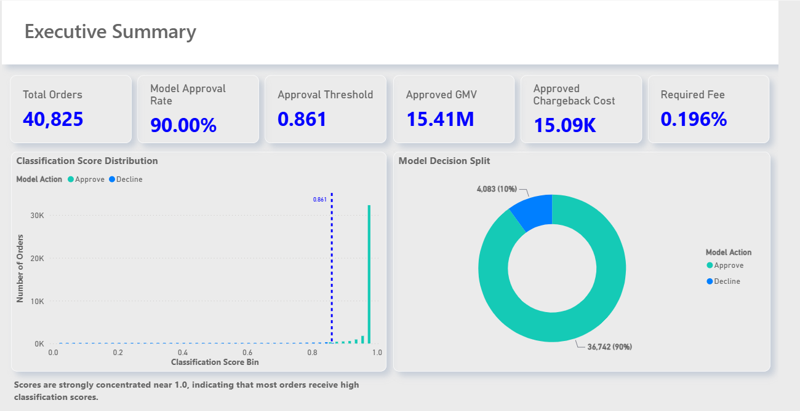

Payment Risk & Chargeback Analytics
Power BI risk analytics dashboard connecting transaction approval decisions, chargeback exposure, risk segmentation and financial impact.
The project analyses classification thresholds, approval rates, approved GMV, chargeback costs and the revenue required to absorb risk-related losses.
Key features: model decision analysis, threshold evaluation, chargeback segmentation, financial impact assessment and customer risk analysis.
Click on the dashboard above to view the project details.